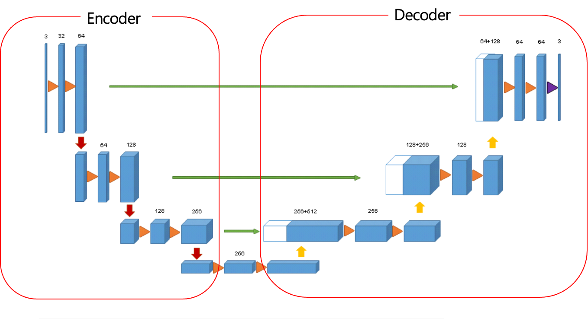

3D U-net
We chose the widely used 3D U-Net architecture for its applicability
to our 3D data and its frequent usage in medical data processing.
This 3D U-Net extends the structure of the 2D U-Net model to handle
3D volumes as input.

The structure of the 3D U-Net resembles the shape of the letter "U", hence the name U-Net. In the U-Net architecture, the input and output dimensions are matched, requiring the model to compress the input data through an encoder and then restore it to its original size through a decoder.
Encoder
The encoder begins with processing the input data through convolutional operations, followed by batch normalization and ReLU activation. Subsequently, max-pooling layers are employed to reduce the size of the feature maps, effectively extracting features from the input image. As this process continues, the spatial resolution of the image decreases.
Decoder
The decoder's role is to restore the shrunken data from the encoder back to its original size. Similar to the encoder, the decoder utilizes convolutional layers, but instead of max-pooling, it employs upconvolution to upsample the feature maps. This iterative process helps in restoring the size of the data.
Skip Connection
To address the reduction in spatial resolution that occurs during the encoding process, skip connections are employed. These connections directly link corresponding layers of the encoder and decoder, allowing for the preservation of spatial information and fine details from the input image.